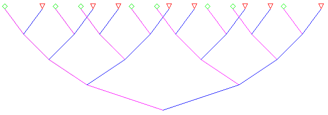
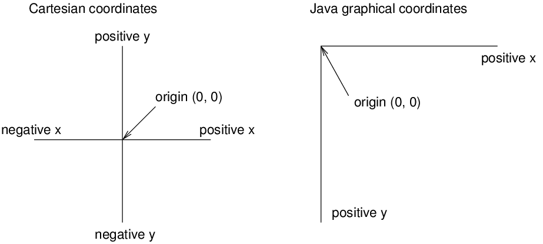

James Madison University, Fall 2017 Semester
Lab16: Recursive 2D graphics

Background
This lab will be short and sweet, in part because there's an assignment due today. But more importantly, it gives you an opportunity to visualize what it means to make a recursive method call. You will also learn a bit about random numbers and graphics programming.
Download Lab16.java as a starting point, and submit your work via Canvas by the end of the day.
Part 1: Random Numbers
The Math.random() method generates a double value greater than or equal to 0.0 and strictly less than 1.0. Whenever you call this method, you should get a different result. Each floating-point value in the range [0, 1) is equally likely to be returned over time. Here are two common examples of how to use random numbers in algorithms.
Run code about x percent of the time. Since we know that the return values of
Math.random()are equally likely, we can use an if statement and the less than operator. In other words, is the random number less than x?Generate a random integer between x and y. Let's say we need a number between 5 and 15 inclusive. Notice how there are 11 possible results [5, 6, 7, 8, 9, 10, 11, 12, 13, 14, 15]. We can use
Math.random()to get a number in the range [0, 1). If we multiply that number by 11, we now have a number in the range [0, 11). Now we just have to add 5 to that number to shift the range to [5, 16). Finally, we cast the value to an int, which throws away any decimal places.
Program: In the hello method of Lab16, write an if statement that prints "Hello, world!" about half of the time and "Howdy, world!" the other half. Test your method interactively (type Lab16.hello() in DrJava Interactions instead of clicking on Run). Make sure it displays each value about half of the time.
Program: Complete the method in Lab16 named randInt. It should take two integer parameters, x and y, and return a random integer in that range. Test your method interactively (type Lab16.randInt(5, 15) in DrJava Interactions instead of clicking on Run). Make sure it returns the numbers 5 and 15 at some point.
Part 2: Java 2D Graphics
We're only going to scratch the surface of graphics programming today. You can read a lot more about it in the official Java Tutorials (see Trail: 2D Graphics). We will mainly use the Abstract Window Toolkit, which is Java's old school library for drawing graphics.
Take two minutes to become vaguely familiar with the following classes. Just read the class descriptions and see what methods they have.
- java.awt.Canvas - blank rectangular area of the screen onto which the application can draw
- java.awt.Color - standard colors (e.g., RED, GREEN, BLUE) and the ability to make others
- java.awt.Graphics - basic drawing methods (e.g., drawLine, drawOval, drawRect, drawString)
- java.swing.JFrame - top level container that represents a window in a graphical user interface
The
mainmethod ofLab16has been provided for you; please don't change any of that code. But take a look at it and figure out how it works. Basically it creates a window, adds a canvas to it, and makes it visible. At that point the main method ends, but the window lives on until you close it. Thepaintmethod is where all the magic happens.You are probably used to Cartesian coordinates, where x and y values can be either positive or negative. In contrast, Java uses a coordinate system where the origin is in the upper-left corner. That way, x and y are always positive integers. Coordinates are measured in pixels; each pixel corresponds to a dot on the screen.

Program: The
Lab16class comes with methods for drawing diamonds and triangles at specific locations. Modify theveemethod so that it draws a diamond on top of the left branch and a triangle on top of the right branch. The size of each shape should be 10.Notice that when you run the program, it prints each method call to System.out. Use this information to trace the behavior of your code and debug as necessary.
Part 3: More Recursion
What if, instead of drawing a diamond or triangle at the top of each branch of the vee, we draw a vee instead?
Modify the
veemethod to call itself at the top of each branch. Usedepth + 1for the depth argument. What happens when you run the program at this point?Add an if statement at the top of
veethat returns (from the current method call) if the depth is greater than 6. Now what happens when you run the program?Change your code so that, at the top of each branch, there's a 50/50 chance whether it will do a recursive call. In other words, at the top of the left branch, it should draw a diamond about half of the time and a vee the other half. On the top of the right branch, it should draw a triangle half of the time and a vee the other half.
At this point, your drawing should look different every time you run the program. Now let's add some fancy colors. In the
veemethod, change the lines that callg.setColor()to use a random color each time. ReplaceColor.magentaandColor.bluewithnew Color(red, green, blue)wherered,green, andblueare random integers between 0 and 255. Use therandIntmethod you made at the beginning of the lab.
Additional References
To learn more about drawing graphics, see the Java 2D tutorial on ZetCode's website.
To learn more about user interfaces (GUIs), see the Swing tutorial on Oracle's website.